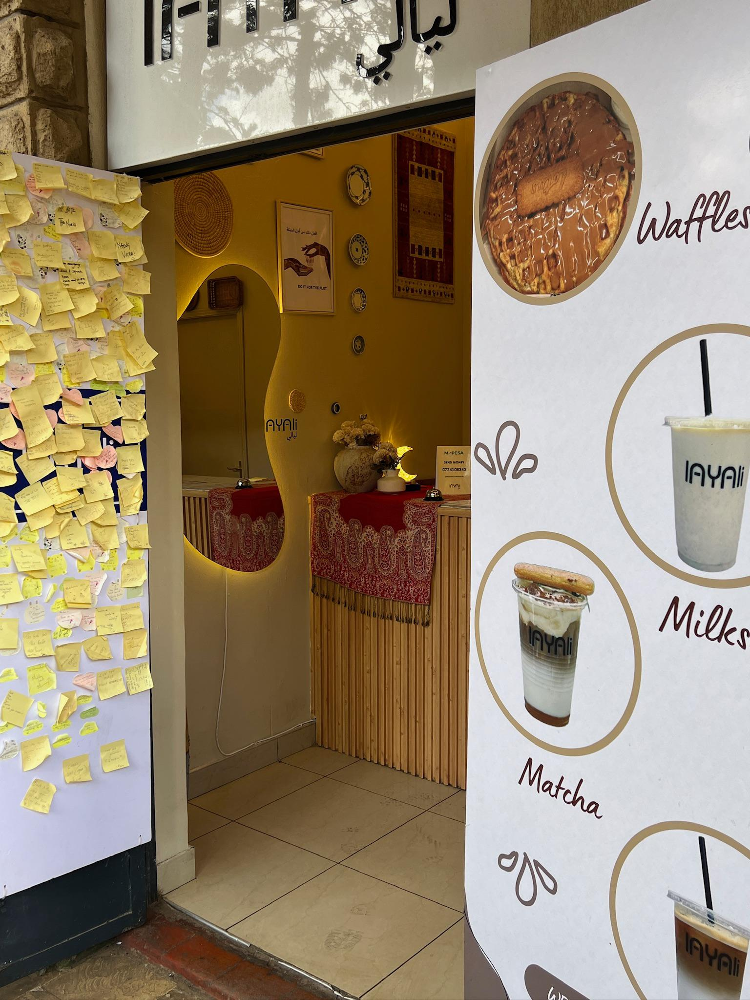
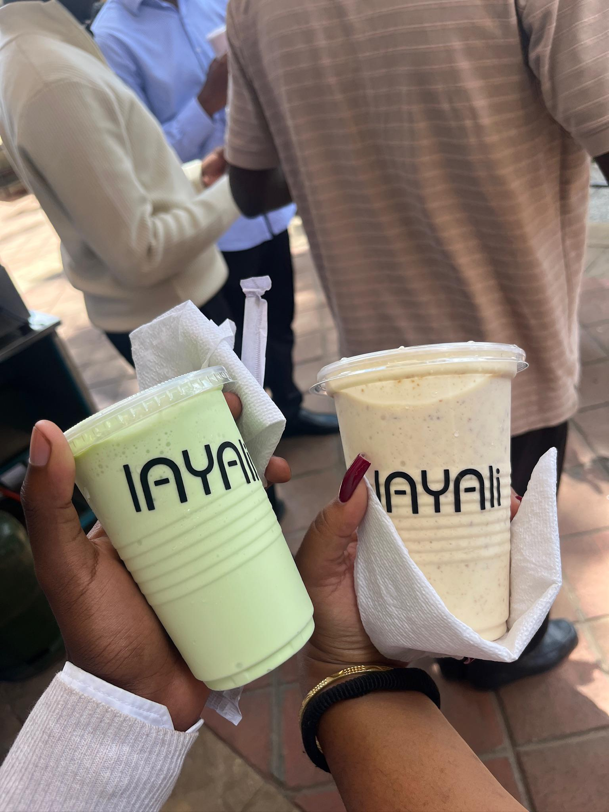

A little corner of warmth in Magharibi
Nestled along Mai Mahiu Road at Magharibi Place, Layali is more than a café, it's your neighbourhood escape. Whether you're a student grabbing a quick bite between classes or just looking for a cozy spot to unwind, we've made this place for you. Our name means "nights" in Arabic, and just like the best nights, every visit here is warm, memorable, and worth coming back for. "Do it for the plot."
Who We Are:
Layali Café is a community-focused café dedicated to providing quality food, refreshing beverages, and exceptional customer service. Situated in Magharibi Place, the café has become a favourite spot for students and local residents seeking a comfortable environment to study, socialize, and enjoy great food.
Our Mission:
To serve and satisfy every customer through quality products and a welcoming atmosphere.
Meet The Team

The heart of Layali Café is its people. Allan and Douglas work to ensure every customer receives excellent service, quality refreshments, and a memorable experience.
Why Students and The Community Love Layali
- Comfortable Environment: Perfect for studying and group discussions.
- Delightful Refreshments: A variety of delicious drinks and snacks to keep you energized.
- Convenient Location: Located learning institutions and student residences along Mai Mahiu Road.
- Friendly Service: A welcoming team ready to serve and attend to you
Our Menu

Step Inside Layali



Customer Feedback
We value your feedback! Tell us about your experience at Layali Café.
Contact Us
We'd love to hear from you! Visit us, give us a call, or connect with us on social media.
📍 Location: Mai Mahiu Road, Magharibi Place, Nairobi
📞 Phone: +254 724 108 343
💬 WhatsApp: Chat with us
📸 Instagram: @layalicafe
🎵 TikTok: @layalicafe